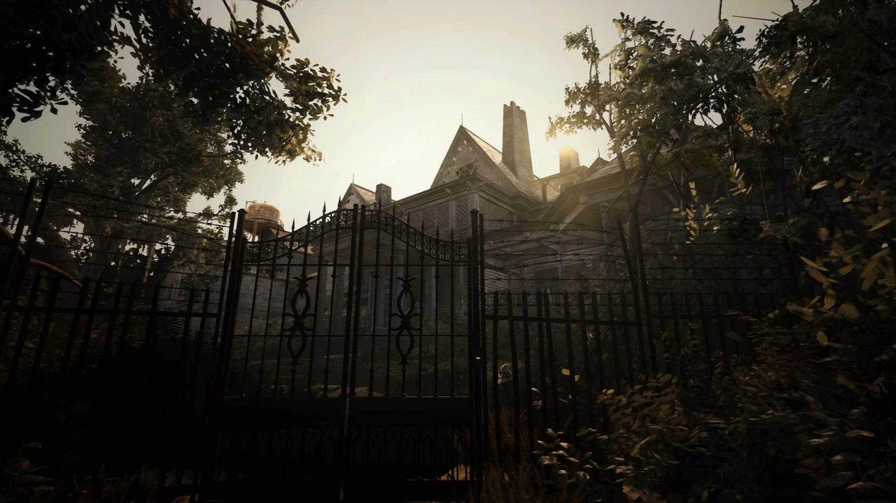

RESIDENT EVIL BIOHAZARD
1.Historia
Em 2017, Ethan Winters, um civil com um passado desconhecido, é atraído para uma fazenda abandonada em Dulvey, Louisiana, por uma mensagem da sua esposa Mia, desaparecida há três anos. Ao explorar uma casa aparentemente abandonada, Ethan encontra Mia presa na caverna. Durante a sua fuga, Mia se torna extremamente violenta e ataca Ethan, forçando-o a matá-la. Depois de receber uma chamada de uma mulher chamada Zoe oferecendo assistência, Ethan é novamente atacado por uma Mia reanimada, cortando-lhe a mão esquerda, e depois subjugado por Jack Baker, patriarca da família Baker. É então arrastado para outra casa onde Zoe costura a sua mão de novo. Ethan é preso por Jack, a sua esposa Marguerite, o seu filho Lucas, e uma mulher idosa em cadeira de rodas. Embora Ethan escape deles, é repetidamente confrontado por Jack, que demonstra a capacidade de regenerar de feridas fatais e desmembramento. Zoe contacta novamente Ethan, revelando que é a filha dos Bakers. Zoe informa Ethan que ela, a sua família, e Mia estão todas infectadas com a mesma doença, mas que podem ser curadas com um soro especial. Ethan dirige-se a uma velha casa para recuperar os ingredientes do soro, onde consegue matar Marguerite. Depois de recuperar os ingredientes, Ethan experimenta visões de uma jovem desconhecida. Lucas captura Zoe e Mia antes do regresso de Ethan, e obriga-o a navegar por um celeiro armadilhado para os encontrar. Ethan ultrapassa Lucas, provocando a sua fuga, e liberta Zoe e Mia. Zoe desenvolve então duas doses de soro, mas Jack, agora fortemente mutado, ataca Ethan, que usa uma dose para aparentemente o matar. Ethan deve então optar por curar quer a Mia quer a Zoe. A escolha de Zoe deixa Mia com o coração partido, apesar da promessa de Ethan de enviar ajuda. Quando ele e Zoe escapam num barco, Zoe revela que os Bakers foram infectados depois da chegada de Mia com uma jovem chamada Eveline quando o naufrágio de um navio-cisterna se deu em terra. Para impedir a sua fuga, Eveline mata psiquicamente Zoe, e Ethan é derrubado do barco por uma criatura. Se Ethan escolhe Mia, Zoe dá um amargo adeus a ele e a Mia. À medida que ele e Mia escapam num barco, deparam-se com o petroleiro acidentado, onde são atacados pela criatura e abatidos do barco. Após qualquer uma das escolhas, Mia acaba no navio naufragado e procura Ethan enquanto experimenta visões de Eveline, que se refere a Mia como a sua mãe. Eventualmente, a memória de Mia é restaurada, revelando que ela foi uma operacional secreta de uma corporação anónima que desenvolveu Eveline como uma arma biológica. Mia e outro agente deviam escoltar Eveline enquanto ela era transportada a bordo do petroleiro, quando Eveline escapou à contenção e afundou o navio. Ela infectou então a Mia num esforço para a forçar a ser sua mãe. Depois de encontrar Ethan, Mia dá-lhe um frasco com o material genético de Eveline. Se Ethan curou Zoe, Mia sucumbe ao controlo de Eveline e ataca Ethan, forçando-o a matá-la permanentemente. Se Ethan curou Mia, ela resiste ao seu controlo o tempo suficiente para selar Ethan fora do navio para o salvar. Após deixar o naufrágio, Ethan descobre um laboratório escondido dentro de uma mina de sal abandonada. Lá, aprende que Eveline é uma arma bio-orgânica capaz de infectar pessoas com um molde psicotrópico que lhe dá controlo sobre a mente das suas vítimas, resultando na sua insanidade, capacidades regenerativas sobre-humanas, e várias mutações. Eveline cresceu obcecada em ter uma família, influenciando-a a infectar Mia e os Bakers, e a atrair Ethan para a casa dos Bakers. Lucas também foi imunizado contra o controlo de Eveline pela organização, em troca de fornecer observações sobre ela. Usando o equipamento de laboratório e o material genético de Eveline, Ethan sintetiza uma toxina para a matar, e prossegue através de uma série de túneis que a levam de volta à casa dos Baker. Eveline ataca Ethan com alucinações, mas ele ultrapassa-as e injecta Eveline com a toxina, que não a mata, mas revela que é a mulher idosa numa cadeira de rodas, que tem vindo a envelhecer rapidamente desde a sua fuga. Eveline transforma-se então num grande monstro mas, ajudada pela chegada de um esquadrão militar, Ethan é capaz de a matar. Com Eveline morta, o pelotão e o seu líder, que se identifica como "Redfield", extrai Ethan de helicóptero. Se Ethan não curou Mia, atira o seu telefone contendo a sua última mensagem do helicóptero para ele, dizendo "adeus". Se a Mia foi curada, é encontrada viva a bordo do helicóptero de Redfield. À medida que o helicóptero voa, revela-se que foi marcado com uma variação do logótipo da Umbrella Corporation.
2.Locais
- Casa dos Baker
- Casa Antiga
- Celeiro Armadilhado
- Navio
- Mina de Sal
No local que se inicia a historia e que você passa a maior parte do jogo, em que Ethan procura pistas do desaparecimento de Mia.


Local onde Ethan procura o elemento do soro para Mia.

Apos pegar o soro Ethan descobre que Lucas esta com Mia, so que o unico jeito era entrar na festa.


Apos escapar de bote com (Mia ou Zoe), eles avistao no lago o Mofo, que os derruba e captura Ethan, que faz com que você controle Mia para o salvar.

Apos sair do Navio Ethan se depara com uma mina de sal, onde havia varias pistas sobre o mofo.


3.Personagens
- Ethan
- Mia
- Zoe Beker
- Jack Baker
- Marguerite Baker
- Lucas Beker
- Eveline
Personagem principal que você comanda no jogo.

Esposa do Ethan, que some e é procurada por Ethan ao longo da historia.


Filha dos Bekers que ajuda Ethan a encontrar Mia e fugir da Casa.

Pai dos Bekers que comanda a casa nova dos Bekers.


Mãe dos Bekers, onde vivia na casa antiga.


O filho engraçado/chato dos bekers, onde sempre fazia brincadeiras de mal gosto.

A responsavel por tudo isso, controladora do mofo e da familia Baker.


4.Musica
Musica Oficial do Jogo: